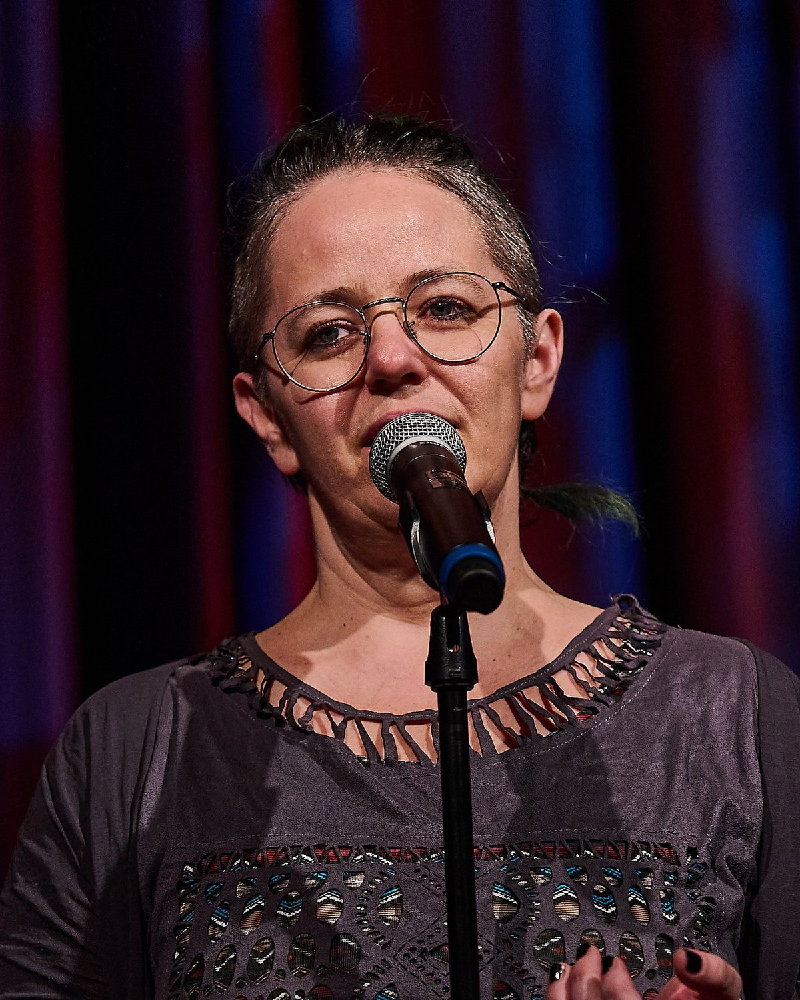

dorothea bucheggertext, konzept, stimme
lebt in wieselburg, grafik- und kommunikationsdesignerin, seit ihrer jugend künstlerisch tätig. seit 2024 als poetry slammerin auf über 50 bühnen in österreich, u. a. beim ö-slam in klagenfurt, im dschungel wien und im wien museum. 2025 das interdisziplinäre projekt „resonanzen – bild in wort und ton“. „letters – eine ahnung von dir“ ist ihr erstes eigenes bühnenstück.
 foto: alma heigl
foto: alma heigl